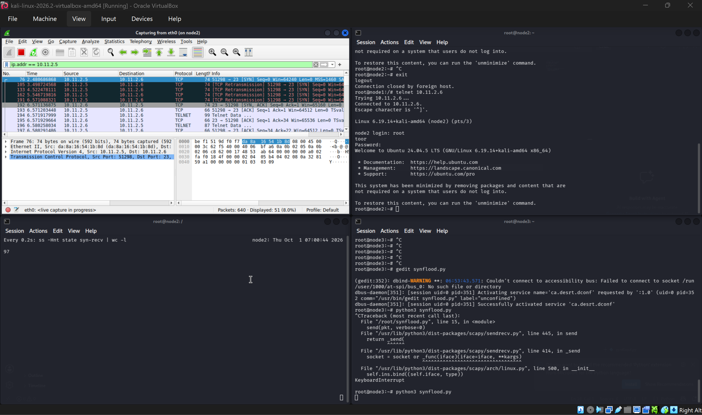
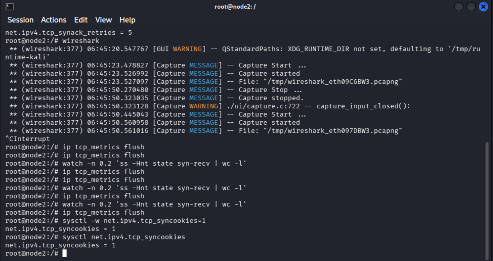
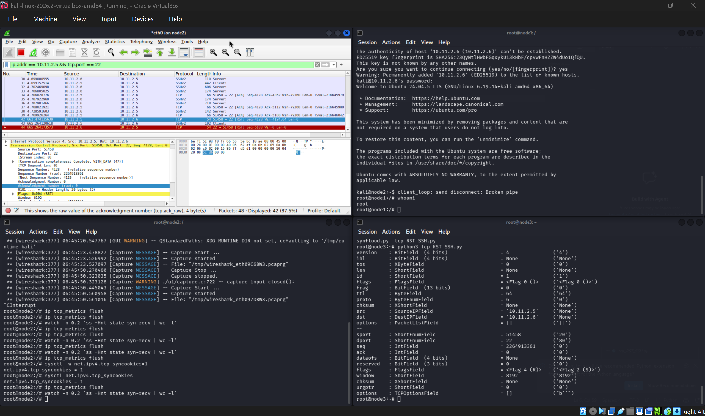
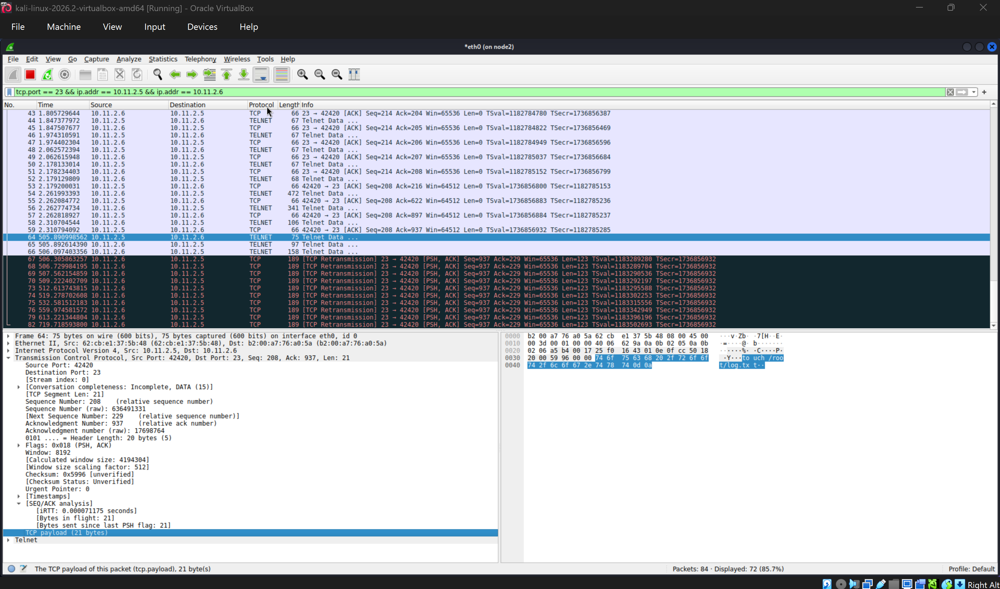
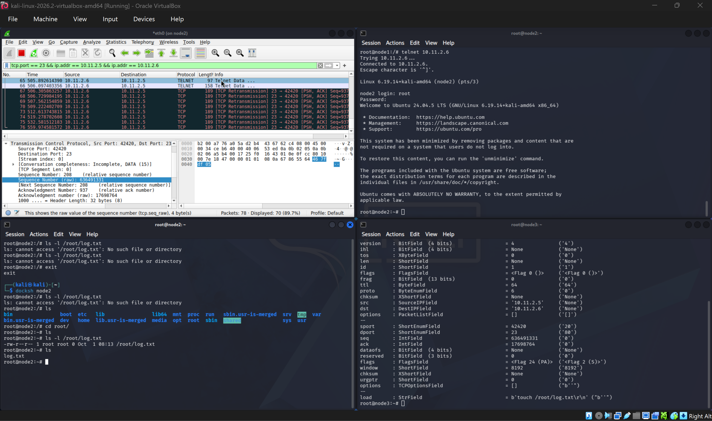
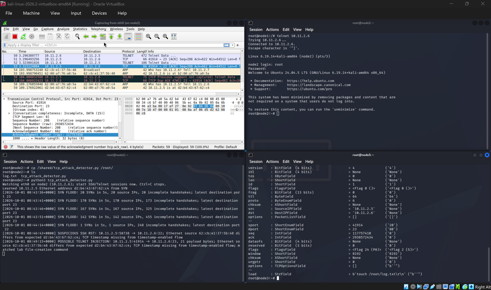

10.11.2.5, node2 server 10.11.2.6, and node3 attacker 10.11.2.7. Wireshark captured node2's eth0. Findings below are limited to the supplied screenshots.The three node addresses were verified, node2 pinged node1 and node3 without loss, and node2's Wireshark captured traffic. The attempted docker compose ps command was run outside the Compose directory and returned a configuration-file error, so the required three-container listing is not yet evidenced.
| Parameter | Node2 value shown | Why it matters |
|---|---|---|
tcp_max_syn_backlog | 128 | Limits pending connection requests before the handshake completes. |
tcp_syncookies | 0 initially | When enabled, SYN cookies help the server respond under SYN-queue pressure without retaining ordinary pending state for every request. |
tcp_synack_retries | 5 | Controls how many SYN-ACK retries are sent while awaiting the final ACK. |
These are observed node2 values. The brief also asks for Kali-host defaults and a comparison; no host values are in the screenshots.
A normal Telnet connection showed SYN → SYN-ACK → ACK (baseline capture). After ending it, ip tcp_metrics flush cleared remembered TCP peer metrics so the next connection could be compared with less carry-over from earlier runs. It does not clear the SYN backlog itself.
Node3 sent many SYNs to Telnet port 23 with changing spoofed source addresses and without completing the handshake. Node2's SYN-RECV monitor showed 97 pending connections. A legitimate node1 Telnet attempt retransmitted its SYN four times before receiving a SYN-ACK, then completed login. The attack therefore caused delay in this run, not a sustained outage. The new packet from node1 was a retransmitted SYN. Node2's capture shows spoofed inbound SYNs and node1's retries; separate captures from node1 and node3 were not supplied, so their packet-level views cannot be compared directly.

On node2, net.ipv4.tcp_syncookies was changed from 0 to 1 and read back as 1. With the flood restarted, a new Telnet handshake and login completed, while the half-open count shown was 127. This supports availability in the later run, but the screenshots do not prove SYN cookies were used for that particular connection or isolate their effect from load variation.

For the active SSH flow, node3 forged a packet claiming source 10.11.2.5:51458 and destination 10.11.2.6:22, with RST set and raw TCP sequence 2264913361 (relative sequence 4128). The packet had no ACK flag or payload. Wireshark showed the forged RST, and node1's SSH client reported Broken pipe. The four-tuple identifies the session; an acceptable sequence number makes the RST plausible to the receiver.

An attacker restricted to node3 could still spoof an IP packet, but an off-path attacker may not know the live client port and acceptable sequence number. They would need visibility into the session or another way to infer those values. Simply knowing the two IP addresses is insufficient.
With node1's root Telnet session active, node3 forged client-to-server PSH, ACK traffic for 10.11.2.5:42420 → 10.11.2.6:23, using raw sequence 636491331 and acknowledgment 17698764 from the observed flow. The 21-byte payload was touch /root/log.txt\r\n. Node2's next acknowledgment advanced from relative 208 to 229, and /root/log.txt appeared. The later server retransmissions are consistent with the endpoints having different stream positions after injection.


/root/log.txt after the injection. Open full screenshot.The brief also requires a controlled reverse-shell demonstration and a node3 screenshot of that connection. No listener or reverse-shell evidence is in the folder, so this part remains incomplete.
Key prompts. I supplied the Task 5 requirement to the AI tool and asked, “Now create a script for Task 5.” I then asked, “Ok walk me through from start to end for Task 5.” I reviewed the resulting approach against the three attacks and ran tcp_attack_detector.py on node2's eth0.
| Attack | Detection approach | Observed result |
|---|---|---|
| SYN flood | Count SYNs in a five-second window; flag at 20 SYNs or 20 incomplete handshakes. | Alert at 20 SYNs/20 source IPs, then 170/170; tracked pending flows later reached 455. |
| SSH RST | Learn node1's Ethernet address and negotiated TCP timestamp use, then flag an inbound SSH RST with mismatches. | SUSPICIOUS SSH RST on source port 58738: Ethernet source differed and timestamp was missing. |
| Telnet injection | Check Telnet data packets for those mismatches and a visible lab command marker. | POSSIBLE TELNET INJECTION on port 41914: 21-byte payload, both mismatches, and the file-creation marker. |

Assessment. The detector produced real-time alerts for all three exercised behaviors. Its pending-flow count is an estimate, not the kernel's SYN-RECV count. Ethernet identity may change legitimately, a normal RST can occur, and an authorized Telnet user can type the same command. The command marker works only for visible plaintext. Alerts therefore require packet and session context before being treated as proof of attack.